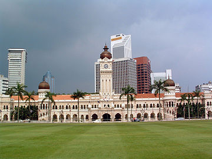
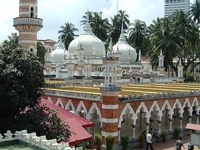
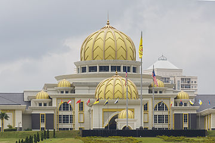
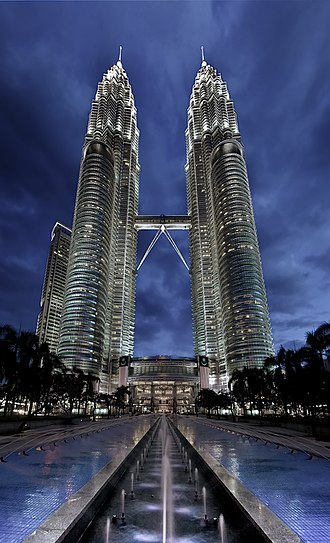

旅游景点
苏丹阿卜杜勒沙马德大厦 ( 大钟楼 )（Sultan Abdul Samad Building）
这座大厦建于1897年，以容纳英国殖民地政府的几个重要部门，但别具摩尔色彩更冠上铜光闪亮的圆屋顶，并拥有40米的大钟楼，是吉隆坡市的重要标志之一，也是许多重要活动的举办场地，例如8月31日的国庆日大游行和迎新年的盛会等。目前是最高法院所在地。
独立广场（Merdeka Square）
独立广场坐落于苏丹阿卜杜勒沙马德大厦对面，面积约8.2公顷。在1957年8月31日，马来西亚国旗开始在此飘扬，象征脱离英国统治而独立，现该升旗地点则矗立着一支高100英尺的旗杆，以纪念这个历史时刻。广场对面的另一端，是一个旅客休息处，喷水池旁屹立着一排柱廊，还有百日菊和万寿菊组成的花海。广场下面的Plaza Putra则是一座集美食、休憩和娱乐于一体的地下街。
国家回教堂（National Mosque）
这座以教堂为独特风格的现代设计，表现出回教艺术、书法、知识和装饰的传统美感。最令人瞩目之处则在于其层叠的伞状屋顶，象征一个独立自主国家的雄心和抱负。其高尖塔高73米。国家回教堂是吉隆坡回教徒常去的主要祈祷的场所。
国家英雄纪念碑（Tugu Negara）
这座由著名雕刻大师Felix de Weldon设计的黄铜纪念碑，高达15.54米，建于1966年，以纪念与马来亚共产党武装斗争时期为国牺牲的英雄；也是全世界最庞大的独立雕刻品之一。
占美清真寺（Jamek Mosque）
在巴生河及鹅唛河交汇点，建于1909年，是吉隆坡市最古老的清真寺，以优雅的拱门穹顶见称，体现摩尔式建筑。
国家皇宫（Istana Negara）
坐落于端古·阿卜杜勒哈利姆路的一座山丘上，市中心之旁，其内青草遍地，鲜花满园盛开，许多宫室应酬、宴会和庆典活动也在此进行。此外，每天游客都可到此观看皇宫守卫的换班仪式
吉隆坡塔（Kuala Lumpur Tower）
位于吉隆坡酒店区附近的咖啡山（Bukit Nanas）上，这座高421米的混凝土塔，是亚洲最高也是全球第四高的塔。吉隆坡塔也是电讯、电台和电视转播的通讯塔。
双峰塔楼（Petronas Twin Towers）
88层的国油双峰塔是目前全世界最高的两座独立塔楼，距地面452米。这辉煌的建筑设计灵感来自回教的Five Pillars，也是超现代化“吉隆坡城市中心”（Kuala Lumpur City Center）计划的主要部分，塔楼内部有一个国油管弦乐礼堂，即马来西亚爱乐管弦乐团（Malaysian Philharmonic Orchestra）及国油表演艺术团的大本营。
城市景观
|  |  |
 |
 |
|---|---|---|---|
| 苏丹阿卜杜勒沙马德大厦 | 独立广场（Merdeka Square） | 国家回教堂（National Mosque） | 国家英雄纪念碑（Tugu Negara） |
|  |  |  |
 |
|---|---|---|---|
| 占美清真寺（Jamek Mosque） | 国家皇宫（Istana Negara） | 吉隆坡塔（Kuala Lumpur Tower） | 双峰塔楼（Petronas Twin Towers） |